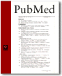

Karen Peterson
{kind=link}
Associate Professor of Nutrition and Society, Human Development, and Health
Departments of Society, Human Development, and Health and Nutrition
Contact Information
-
Department of Society, Human Development, and Health
Kresge Building
617
677 Huntington Avenue
Boston, MA 02115
Phone: 617-432-1135
Email: kpeterso@hsph.harvard.edu
Other Affiliations
-
Director of Public Health Nutrition, Department of Nutrition
Education
-
R.D., 1977, Peter Bent Brigham Hospital D.Sc., 1987, Harvard School of Public Health
-
Dr Peterson's research considers determinants of intergenerational patterns of growth in mothers and children and the design and evaluation of domestic and international surveillance systems and community-based interventions in low income, multi-ethnic populations. She is the Principal Investigator of Reducing Disease Risk in Low-Income, Postpartum Women, a randomized controlled trial (NICHD R01 HD37368), testing the efficacy of an educational model delivered by community-based paraprofessionals in improving diet, activity, and patterns of pregnancy-related weight retention among new mothers over a 12-month postpartum period. This project was funded through the Behavior Change Consortium, the first trans-NIH research program comprising 15 RO1 research grants to develop theory-driven approaches to improve diet, activity, and/or smoking in diverse populations. Dr Peterson, in collaboration with Dr Geoffrey Greene (University of Rhode Island), also directs the Coordinating Center for the Multi-Center BCC Validation Study (NCI, 2000-5) of factors associated with accuracy and precision of self-reported dietary intake, as well as the BCC Dietary Supplement Study (ODS/NCI/OBSSR, 2003-5) of patterns of dietary supplement use and their relationship to lifestyle behaviors in diverse populations and in response to intervention. Dr Peterson was Co-PI of the Planet Health intervention trial (Gortmaker, NICHD, 1994-97), is currently Co-PI of the Evaluation of the Massachusetts Partnership for a Healthy Weight, testing the efficacy of the Planet Health curriculum combined with school-based environmental policy change. Through the Harvard Prevention Research Center, Dr Peterson is PI of several projects centering on improving approaches to surveillance of nutrition, activity and weight status in the US population.
Dr Peterson directs research and training in the newly established Program in Public Health Nutrition in the Department of Nutrition, and oversees the work of one Research Scientist and seven doctoral students. She teaches courses on Physical Growth and Development and on Programs and Principles of Public Health Nutrition. Dr Peterson is Co-Editor of the journal Ecology of Food and Nutrition, an Officer and Executive Board member for the International Nutrition Foundation, President of the US Graduate Faculties of Public Health Nutrition and President of the MCH Council of the Association of Schools of Public Health. She is a member of the IOM Scientific Advisory Committee on Revision of the WIC Food Packages.
-

Gortmaker SL, Peterson KE, Wiecha JL, Sobol AM, Dixit S, Fox MK, Laird N. Reducing obesity via school-based interdisciplinary intervention among youth: Planet Health. Archives of Pediatric and Adolescent Medicine 1999; 153: 409-418.
Hernandez-Diaz S, Peterson KE, Dixit S, Hernandez-Prado B, Parra-Cabrera S, Barquera S, Sepulveda J, Rivera J. Association of maternal short stature with stunting in Mexican children: Common genes vs. common environment. European Journal of Clinical Nutrition 1999;53(12):938-45.
Peterson KE, Sorenson G, Pearson M, Hebert, J., Gottlieb B.R., McCormick MC. Design of an intervention addressing multiple levels of influence on dietary and activity patterns of low-income, post-partum women. Health Education Research 2002; 17:531-540.
Newby PK, Peterson KE, Berkey CS, Leppert J, Willett WC, Colditz GA. Dietary composition and weight change among low-income preschool children. Archives Pediatric Adolescent Medicine 2003;157(8):759-64.
Qazi SA, Khan MA, Rizvi T, Khatoon Z, Peterson KE. Longitudinal growth patterns of Pakistani infants in a clinic based growth promotion program. Indian Pediatrics 2003;40:1043-1053
Peterson KE, Salganik M, Campbell C, Rhoads GG, Rubin J, Berger O, Ware JH, Rogan W. Effect of succimer on growth of preschool children with moderate blood lead levels. Environmental Health Perspectives 2004;112:233-237.
|
HARVARD SCHOOL OF PUBLIC HEALTH Copyright, 2007, President and Fellows of Harvard College Page generated: Monday, February 26, 2007 |
UPDATE YOUR PAGE |